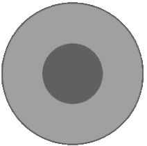
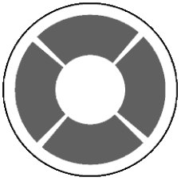
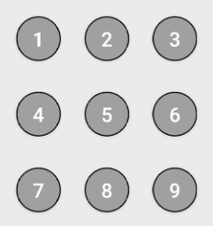
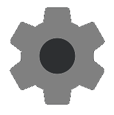
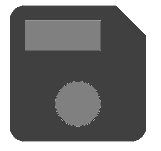
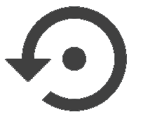
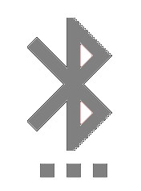

"Простой BLE джойстик" предназначен для дистанционного управления самодельным роботом. В качестве приемника используется Bluetooth LE модуль на чипе CC2541 - например, AT-09, MLT-BT05, HM-10 и тд. Программа не предназначена для работы с классическим Bluetooth.
Возможная схема подключения модуля к Arduino
Элементы управления
Программа посылает по радио - каналу ASCII символы, которые интерпретируются управляемым устройством как команды. При отпускании кнопки посылается символ "0".
 Джойстик 1. Имитирует обычный джойстик на 8 направлений:
Значения по умолчанию:
- a Вперед
- b Вправо
- c Назад
- d Влево
- k Вперед-направо
- l Назад-направо
- m Назад-влево
- n Вперед-влево
 Джойстик 2. Просто четыре кнопки.
Значения по умолчанию:
- A Вперед
- B Вправо
- C Назад
- D Влево
 Девять дополнительных кнопок - на всякий случай.
По умолчанию - значения от "1" до "9".
Все значения можно переопределить на экране настроек  Здесь же можно изменить UUID сервиса и характеристики управляемого устройства, а также поменять местами джойстик 1 и 2. UUID без необходимости лучше не менять.
 -сохранить настройки  -сбросить.
Подключение
Поиск доступных устройств начинается автоматически при переходе на экран сканера , при этом текущее соединение сбрасывается. Кликнув по найденному устройству, можно попытаться к нему подключиться. При неудачном сканировании или подключении, повторите попытку. Сканирование продолжается 5 секунд и может быть прервано.
Если UUID сервиса или характеристики устройства отличается от заданного в настройках, подключение может произойти, но оно сбросится при переходе на экран управления.